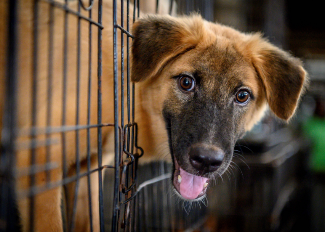
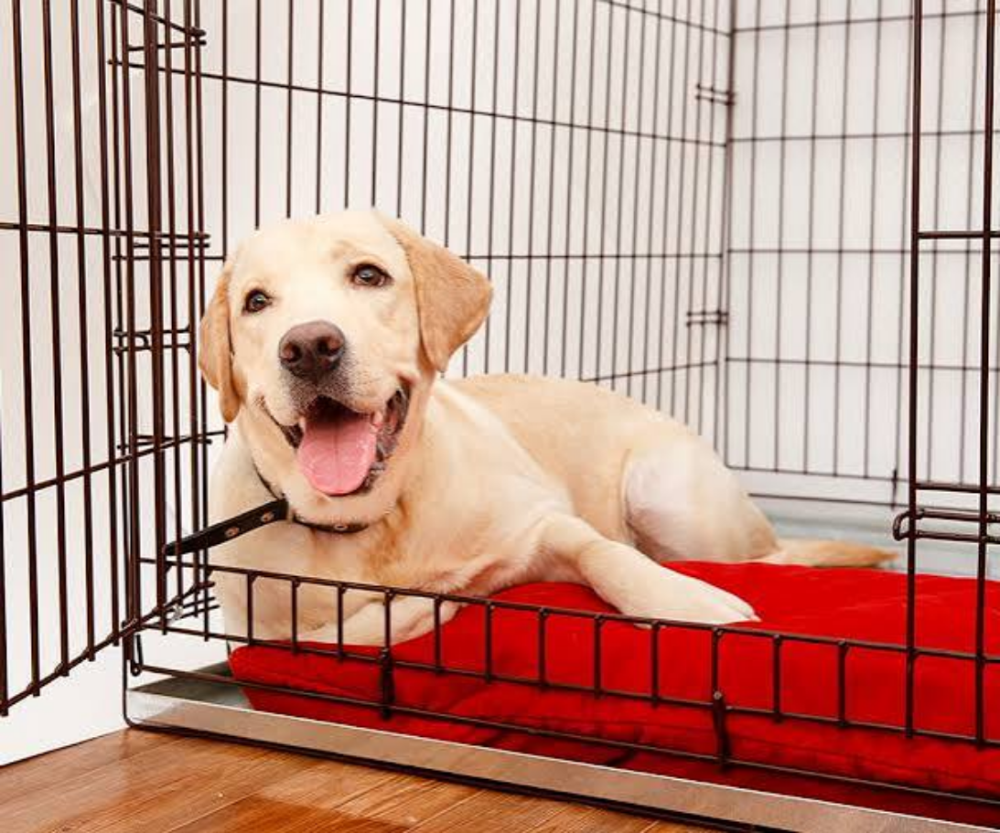
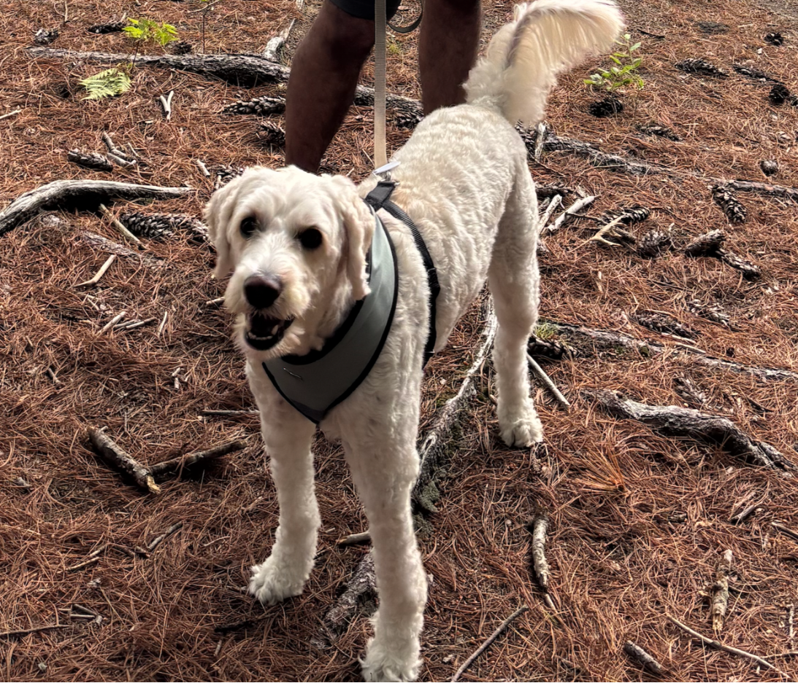
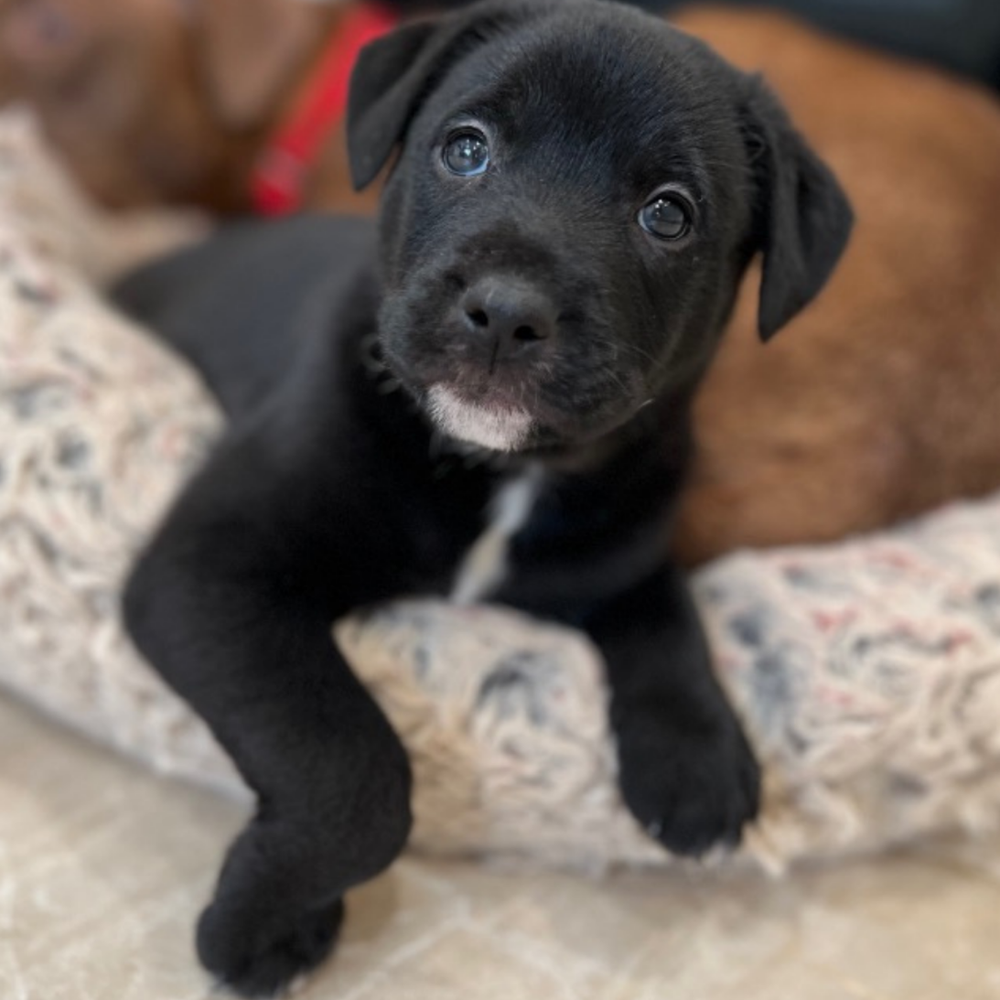

Paws First rescues dogs from unsafe situations and helps them find loving families. With your help, we can do even more.

Paws First is a local dog shelter dedicated to rescuing dogs in need and connecting them with families who will be part of the rest of their lives. We take in dogs through our own rescue efforts, alongside community members who report strays or dogs in unsafe situations. Every dog in our care receives food, medical attention, and a safe place to stay while we search for their home.

Comet

Benny

Rocky